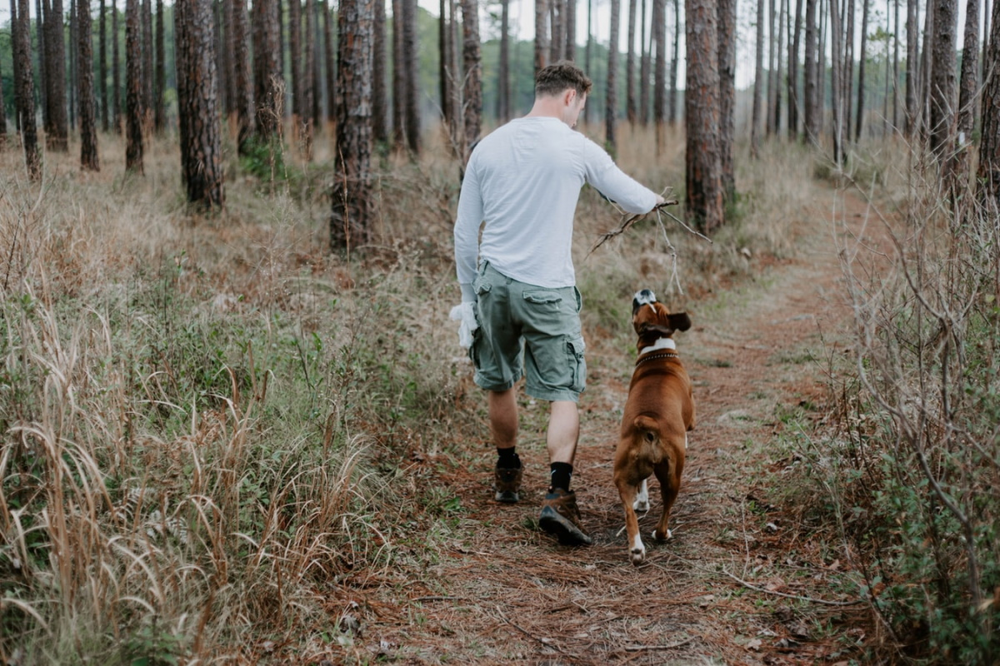

Einzeltraining

Dies ist die effektivste Art des Trainings. Hier kann ich intensiv auf Hund und Halter eingehen. Auf diese Weise kann ich dich
und deinen Hund an eurem aktuellen Kenntnisstand "abholen" und das Hundetraining so gestalten, dass du und deine Fellnase am
Ende der Trainingsphase genau das wisst und könnt, was ihr für euren individuellen Alltag benötigt.
Weil das Training auch am besten in deinem Alltag - also vor Ort - stattfinden sollte, komme ich zu dir nach Hause.
Erstberatung
Bevor du dir einen Hund anschaffst, solltest du prüfen, ob die Voraussetzungen dafür gegeben sind.
Hunde brauchen viel Zeit, Pflege und verursachen Kosten. Bei der Entscheidung, welche Hunderasse man sich anschaffen möchte,
spielen mehrere Faktoren eine Rolle.
- Wieviel Zeit habe ich für den Hund?
- Wieviel Auslauf kann ich dem Tier bieten?
- Wohne ich in der Stadt oder auf dem Land?
- Zu welchem Zweck wurde der Hund gezüchtet (Hütetrieb oder Jagdinstinkt)?
Wenn du dich zur Anschaffung eines Hundes entschieden hast, achte bei der Auswahl der Rasse (auch bei Mischlingen) darauf,
welcher Hund zu dir passt. Das Aussehen des Vierbeiners sollte nicht das primäre Auswahlkriterium sein, denn auch niedliche
Hunde können viel Auslauf benötigen, schwer erziehbar sein oder nicht in deinem Alltag passen.
Grunderziehung
In der Grunderziehung trainieren wir alles rund um den Grundgehorsam, der den Hund zu einem zuverlässigen Alltagsbegleiter werden lässt.
- Bleib
- Sitz, Platz und Steh
- Deckentraining
- Entspannungstechniken
- Aufmerksamkeit (auch bei Ablenkung)
- Verhalten bei Radfahrern, Joggern & Co.
- Impulskontrolle
- Sicherer Abruf
- Kommando "Fuß"
- Leinenführigkeit
- uvm.
Die Grunderziehung ist für Hunde ab dem 7. Monat, sowie für erwachsene Hunde geeignet.
Welpen
Ein Welpe befindet sich zwischen der 8. und 16. Woche in einer besonderen Phase, die „Sensible Phase“ genannt wird.
Dinge die der Welpe in dieser Zeit lernt, lernt er fürs Leben. Gelerntes wird schneller, leichter und nachhaltiger im Gehirn verankert.
Wichtig in dieser Zeit sind Dinge, die der Hund später einmal zuverlässig und ohne darüber nachzudenken ausführen soll.
Im Einzeltraining kann ich auf dich und deinen Hund intensiver und individueller eingehen.
Zudem können wir vor Ort direkt beginnen, den Familienzuwachs von Anfang an in das alltägliche Leben zu integrieren.
Hier werden dem Welpen die Grundkommandos in entspannter Lernatmosphäre - also zu Hause - vermittelt.
Über positive Motivation werden in kurzen Trainingseinheiten die ersten wichtigen Kommandos aufgebaut
(siehe oben).
Kombiniertes Training: In den vielen Jahren als Leiterin einer Welpengruppe, habe ich die Erfahrung gemacht,
dass eine Kombination aus „Welpen-Einzeltraining“ und „Welpengruppe“ die beste Grundlage für das spätere Hundeleben ist.
Hier geht's zur Welpenschule bei der SV-OG Ehingen.
Junghunde
Das Welpen-Training geht nahtlos in das Jundhunde-Training über. Hier werden weitere wesentliche Grundsteine der Erziehung eingeübt.
Sitz, Platz, Bleib, Abrufen unter erschwerten Bedingungen, Leinenführigkeit und vieles mehr…
Ein wesentlicher Bestandteil dieses Trainings, ist das Eingehen auf die Veränderungen die in dieser Zeit geschehen.
Da das niedliche Welpen-aussehen verschwindet und die Hunde bald von Statur und Fell „erwachsen“ aussehen, passiert es leider allzu oft,
dass von einem Junghund Dinge erwartet werden, die er noch nicht leisten kann. Von der Pubertät über die Adoleszenz bis hin zur geistigen Reife,
finden einige Veränderungen statt, die es zu verstehen und zu Händeln gilt.
Mit viel Know-how und Einfühlungsvermögen helfe ich dir durch diese turbulente Zeit und stehe dir mit Rat und Tat zur Seite.